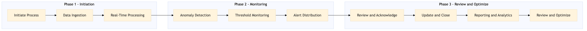

EX-PY-03 is a process for real-time monitoring and alerting of travel spend, ensuring that corporate payments and settlements are accurately tracked and managed in real-time.
| Trigger | The process is triggered by the initiation of a new travel expense report or transaction within the TMC systems. |
| Outcome | Success looks like real-time alerts being sent to relevant stakeholders when predefined spending thresholds are exceeded or unusual activity is detected, enabling timely intervention and compliance with corporate policies. |
| Systems | SAP Concur T2 SAP Concur Expense Amex GBT Neo/Complete AWS SageMaker Snowflake Kafka Salesforce Tableau SAP S/4HANA SAP Analytics Cloud |

Click to enlarge
| Step | Name & Pain Point | Role | System | Input | Output | KPI | Flags |
|---|---|---|---|---|---|---|---|
| 1.1 | Initiate Process Delays in initiating the monitoring process | Travel Administrator | SAP Concur T2 | New travel expense report or transaction | Process initiated | Time to initiate process < 5 seconds | ⚠ Exception |
| 1.2 | Data Ingestion Ingestion errors or delays | Data Engineer | AWS SageMaker, Snowflake | Expense data from TMC systems | Cleaned and ingested data | Data ingestion rate > 1000 records/second | ⚠ Exception |
| 1.3 | Real-Time Processing High processing latency | Data Engineer | Kafka, AWS SageMaker | Cleaned data | Processed data stream | Processing latency < 2 seconds | ⚠ Exception |
| 1.4 | Anomaly Detection False positives/negatives | Data Scientist | AWS SageMaker | Processed data stream | Anomalies detected | Detection accuracy > 95% | ◆ Decision |
| 1.5 | Threshold Monitoring Missed alerts due to system failures | Travel Administrator | SAP Concur Expense, Amex GBT Neo/Complete | Processed data stream | Alerts generated | Alert response time < 1 minute | ◆ Decision |
| 1.6 | Alert Distribution Failed alert deliveries | Travel Administrator | Salesforce, Tableau | Alerts generated | Alerts sent to stakeholders | Distribution success rate > 98% | ⚠ Exception |
| 1.7 | Review and Acknowledge Non-acknowledged alerts | Travel Approver | SAP Concur Expense, Salesforce | Alerts sent to stakeholders | Acknowledgments received | Acknowledge rate > 90% | ◆ Decision |
| 1.8 | Update and Close Open processes due to errors | Travel Administrator | SAP Concur T2, SAP S/4HANA | Acknowledgments received | Process closed | Closure rate > 95% | ⚠ Exception |
| 1.9 | Reporting and Analytics Slow report generation | Data Analyst | SAP Analytics Cloud, Tableau | Processed data stream | Analytics reports generated | Report generation time < 5 minutes | ⚠ Exception |
| 1.10 | Review and Optimize Ineffective optimizations | Travel Administrator, Data Engineer | SAP Concur T2, AWS SageMaker | Analytics reports generated | Process optimized | Optimization rate > 80% | ◆ Decision |